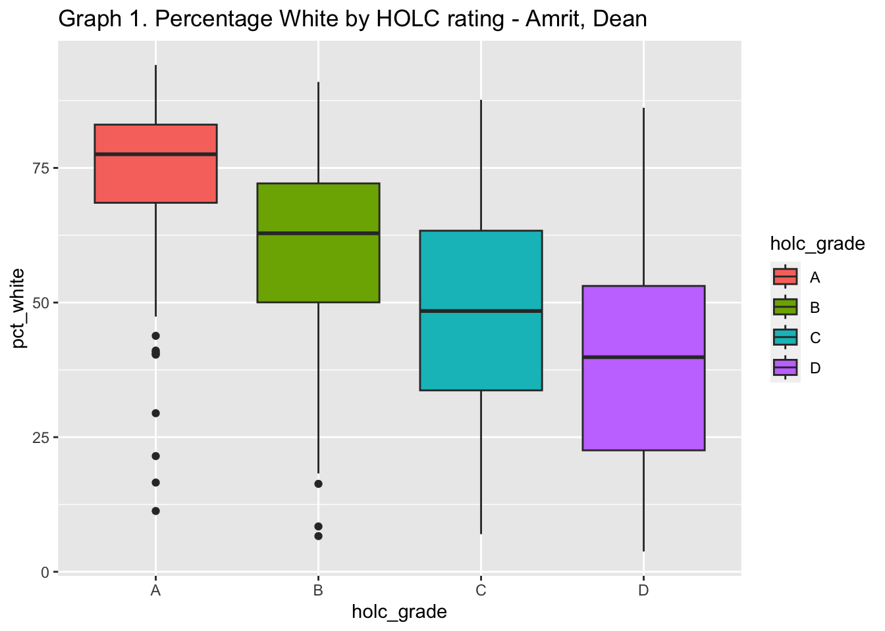
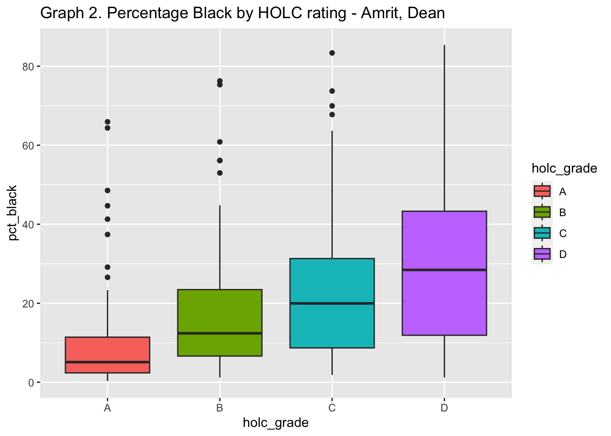
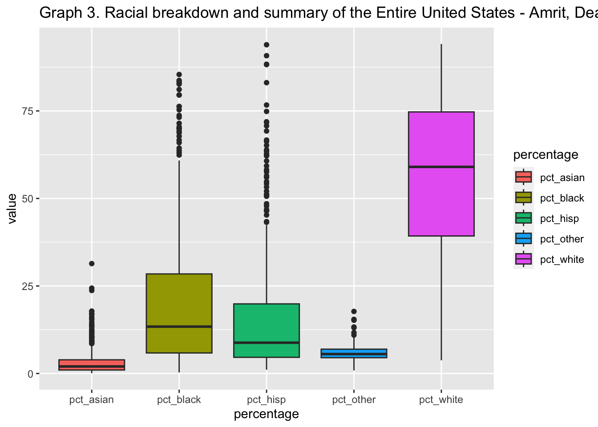
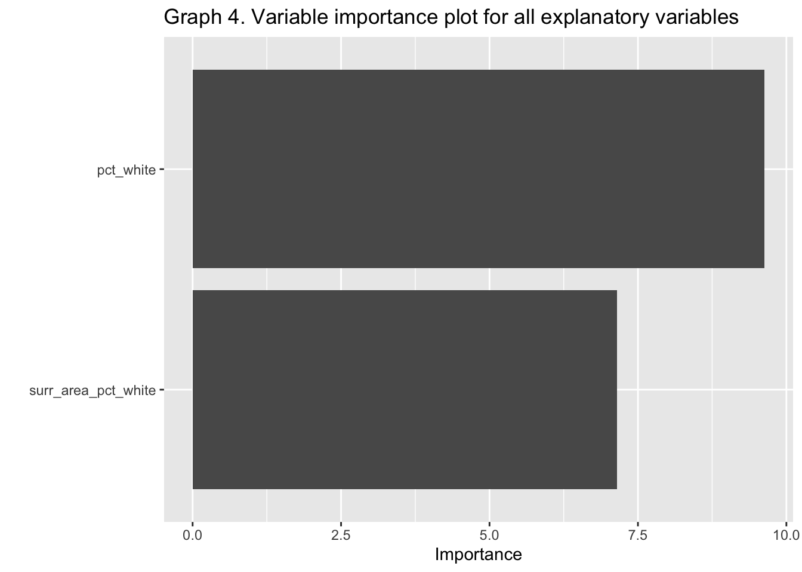
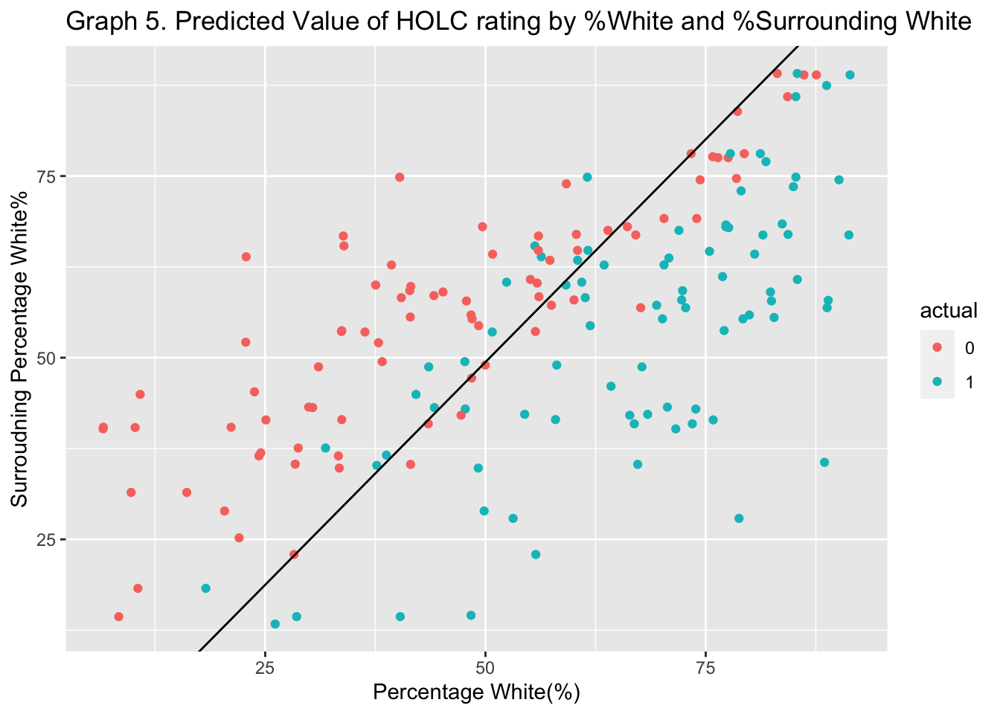
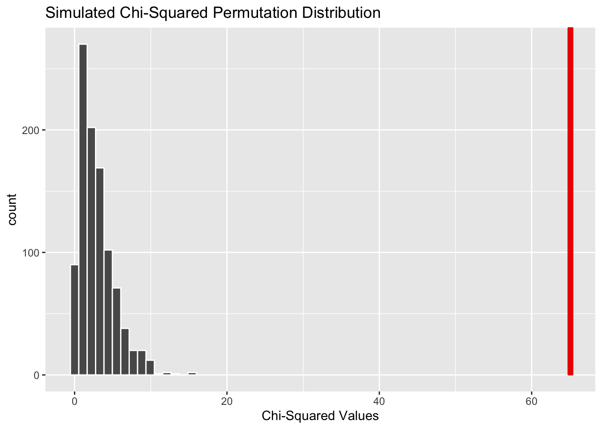
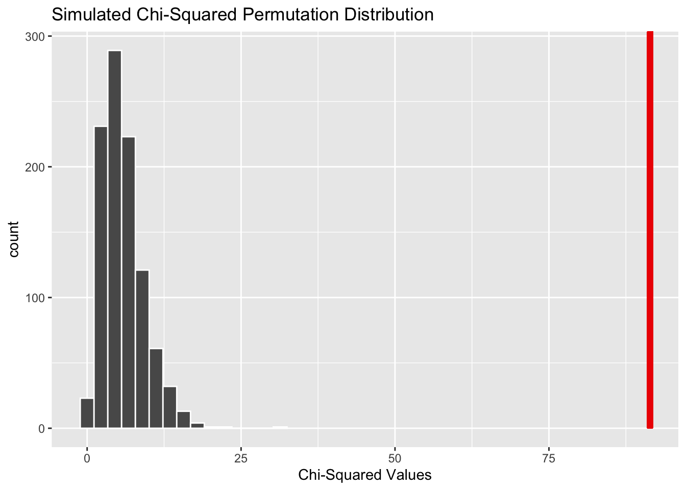
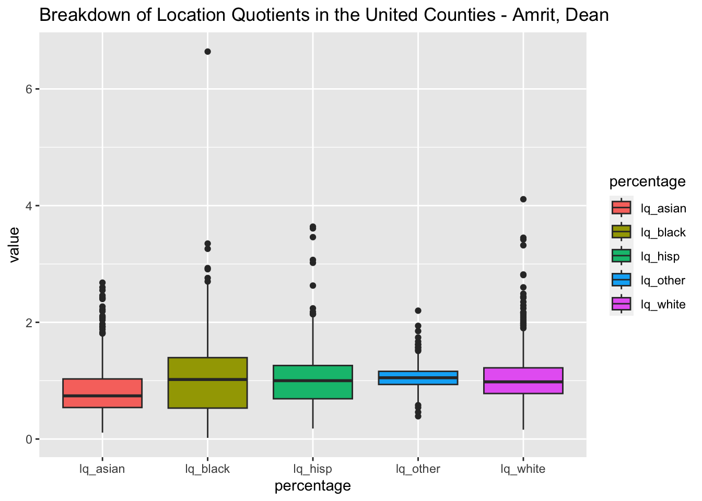
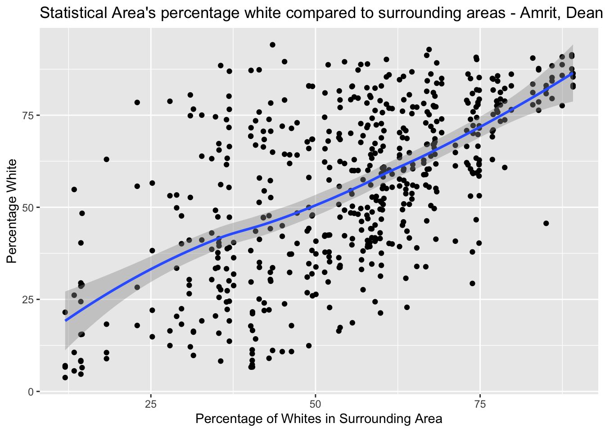
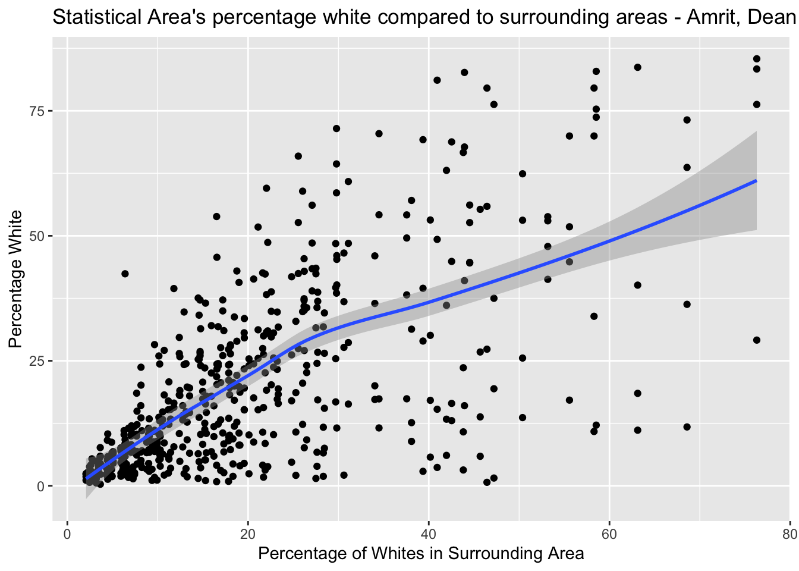

1 Background and Significance
In the late 1950s and early 1960s a phenomenon called white flight occurred where whites left multiracial areas in significant numbers. This left inner cities gutted of wealth, and contributed to the segregation between metro areas.
The Homeowners Loan Corporation (HOLC) was established in 1933 by FDR as part of the new deal. Its primary goal was to refinance home mortgages in default to prevent foreclosure. In order to categorize homes, HOLC created a map to rank neighborhoods, ranged A through D. A(green) was the best rating, B(blue) was still desirable, C(yellow) was declining, D(red) was hazardous. While certain economic criteria were included, the A rating was reserved for communities that were “ethnically homogeneous”, and the D rating was reserved for communities that were “infiltrated” by “undesirable populations”. Banks refused to lend to individuals in areas with the lower grades, making it impossible for blacks and other racial minorities to receive mortgages. We’re interested to determine whether this discrimination is still prevalent today, after almost 87 years. Are there lasting effects from HOLC grades in the 1930s with racial diversity in 2020, and can we find the relationship between HOLC grades with today’s demographics?
2 Methods
a. Data collection.
We retrieved the redlining data sets from github. The data come from 2020 population estimates of race and ethnicity in areas specified in HOLC maps from 1935-1940, originally found in the Mapping Inequality Project. Population estimates include surrounding regions of every statistical area’s HOLC map for each ethnicity group and grade. Race and ethnicity data are from the 2020 U.S decennial census, and separated into the 5 following groups: White, Black, Asian, Latino/Hispanic, and Other. Each observation self identified themselves to be part of either of the 5 groups.
Each racial and ethnic group has a location quotient (LQ) that is a measure of segregation. LQs compare each group’s presence in small areas to its overall presence in surrounding areas. Presence is measured as an ethnic group’s proportion of the total population. LQ values above one indicate that an ethnic group is over represented in the HOLC zone in question, whereas scores below one suggest a group is underrepresented.
b. Variable creation.
We created a race indicator variable titled “Race_Indicator” which is a non ordinal categorical variable with two levels, “black” and “not black”. The variable labels counties according to their plurality population. Counties with a majority black population receive the label “black”, and counties with a different racial majority are labeled “not black”.
We also created a different race indicator variable titled “Race” which is a non ordinal categorical variable with five levels, “Black”, “White”, “Asian”, “Hispanic”, and “Other”. Each county is labeled according to one of the five aforementioned categories depending on its plurality population.
Finally, we created a dummy variable called HOLC_Indicator, which classifies a good holc rating (A, B) as 1, and a bad HOLC rating (C, D) as 0.
c. Analytic Methods.
We will first create a logistic regression model, to determine the effect of various explanatory variables on the HOLC rating. We will start by selecting various possible explanatory variables, including holc_grade, pct_white, pct_black, surr_area_pct_white, and surr_area_pct white. Next, we create a dummy variable to help us classify the HOLC grades. A and B HOLC grades, which we consider good, will be represented by a 1 in the dummy variable. C and D HOLC grades, which we consider bad, will be represented by a 0 in the dummy variable. Next, we split the data with the validation split method. We use a 70/30 split with not testing and testing data because we do not have many data points, and so we require more data points for testing than is typical. The not testing data will be further split 75/25 to training and validation. The final percentages are: 52.5% training, 17.5% validation, and 30% testing.
Next, we will create many possible models by combining the explanatory variables and their interactions, to test our data with. We will select the model with the highest accuracy. If more than one model is equally accurate, we will choose the simpler model. Next, we will run the model with the testing data, and collect predictions, estimates and variable importance. Finally, we will create a graphing data set by combining the explanatory variables from the testing split with probability predictions and predictions. We will create a 2d color coded scatter plot which displays one explanatory variable per axis and graphs the exponential component of the logistic regression function as a linear line. We will also create a 3d plot displaying both explanatory variables and calculated probability. Finally, we will display a variable importance bar graph as well as statistics for the model.
Then we’ll further examine our results by conducting a permutation test to determine whether HOLC grades are assigned independent of race, more specifically, whether their assignment is independent of being black. There are 4 possible HOLC grades ranging from A to D, A being the best and D being the worst . We will designate counties according to their plurality population. counties with a larger percentage of blacks will be labeled “black”, for black state, those with a different racial majority will be labeled “not black”. We are testing to see whether HOLC rating is independent of being in a black state or not. We will use the infer package to generate 1,000 permutations, with sample size 551, and create the permutation distribution. The test statistic is a chi-squared value from the data. From there we will calculate the p-value and compare it to our significance level of \(\alpha\) = 0.001.
We will then try to confirm our results by conducting another test for independence using another chi-squared method, though instead we’ll perform it without simulating data . There are 2 categories, HOLC rating and majority race. The first, as mentioned previously, is an ordinal categorical variable with 4 levels. Majority race is a non-ordinal categorical variable denoted by “black” and “not black”. In total there will be 8 cells, providing us with a Chi-Squared distribution of 6 degrees of freedom. Then we would use Base R commands to find the test statistic and p-value. Finally, we would compare the p-value to our significance level of \(\alpha\) = 0.001
Lastly, we try to expand our hypothesis testing to examine whether the racial discrimination in HOLC grade assignment extends to race in general, as opposed to just black labeled counties. To do so, we conduct another simulated permutation test using a chi-squared statistic. Again, we designate counties to one of the five levels “Black”, “White”, “Asian”, “Hispanic”, and “Other” according to their racial plurality. We are testing to determine whether HOLC rating is independent of a county’s racial assignment. We will use the infer package to generate 1,000 permutations, with sample size 551, and create the permutation distribution of chi-squared statistics under the null hypothesis that the variables are independent. From there we will calculate the p-value and compare it to our significance level of \(\alpha\) = 0.001.
3 Results
Statistical Summaries
Graph 1. is a breakdown of HOLC grade by percentage white.

Graph 2. is a breakdown of HOLC grade by percentage black.

Graph 3. displays the racial breakdown of the dataset across the entire entire United States.

# A tibble: 4 × 6
type white black hisp asian other
<chr> <dbl> <dbl> <dbl> <dbl> <dbl>
1 min 3.77 0.31 1.1 0.09 0.88
2 median 59.0 13.4 8.8 2.01 5.55
3 max 94.1 85.4 93.9 31.4 17.7
4 sd 22.5 18.7 16.9 3.67 2.07Data creation for Logistic Regression
A sample of the final data pre-split.
# A tibble: 5 × 6
holc_grade pct_white pct_black surr_area_pct_black surr_area_pct_white HOLC_…¹
<chr> <dbl> <dbl> <dbl> <dbl> <fct>
1 A 66.8 23.3 16.6 71.2 1
2 B 61.2 24.3 16.6 71.2 1
3 C 64.9 20.3 16.6 71.2 0
4 D 40.8 45.7 16.6 71.2 0
5 A 72.9 7.8 11.8 66.8 1
# … with abbreviated variable name ¹HOLC_IndicatorTesting models on validation data
Model selection based off of various explanatory varaibles. Model 1 is the null model and we selected Model 5 with Percentage white and surrounding area percentage white was selected as it had the highest accuracy. We have also displayed the correct ratio of
# A tibble: 8 × 3
model_name accuracy roc_auc
<int> <dbl> <dbl>
1 1 0.660 0.698
2 2 0.711 0.808
3 3 0.711 0.814
4 4 0.701 0.760
5 5 0.763 0.858
6 6 0.742 0.855
7 7 0.670 0.687
8 8 0.691 0.794Using Model
The model’s accuracy on testing data is 0.765. We have also displayed a sample of the models predicted values, and estimates. 39 out of 166 total predictions were incorrect, and we display that the dominant variable is pct_white in Graph 4.
# A tibble: 2 × 4
.metric .estimator .estimate .config
<chr> <chr> <dbl> <chr>
1 accuracy binary 0.765 Preprocessor1_Model1
2 roc_auc binary 0.911 Preprocessor1_Model1# A tibble: 5 × 7
id .pred_0 .pred_1 .row .pred_class HOLC_Indicator .config
<chr> <dbl> <dbl> <int> <fct> <fct> <chr>
1 train/test split 0.717 0.283 7 0 0 Preprocesso…
2 train/test split 0.969 0.0306 8 0 0 Preprocesso…
3 train/test split 0.585 0.415 12 0 0 Preprocesso…
4 train/test split 0.261 0.739 13 1 1 Preprocesso…
5 train/test split 0.353 0.647 15 1 0 Preprocesso…# A tibble: 3 × 5
term estimate std.error statistic p.value
<chr> <dbl> <dbl> <dbl> <dbl>
1 (Intercept) -1.11 0.447 -2.48 1.33e- 2
2 pct_white 0.114 0.0118 9.63 5.72e-22
3 surr_area_pct_white -0.0930 0.0130 -7.15 8.88e-13 Truth
Prediction 0 1
0 59 15
1 24 68
Call: stats::glm(formula = ..y ~ ., family = stats::binomial, data = data)
Coefficients:
(Intercept) pct_white surr_area_pct_white
-1.10778 0.11403 -0.09299
Degrees of Freedom: 384 Total (i.e. Null); 382 Residual
Null Deviance: 533.7
Residual Deviance: 346.4 AIC: 352.4
Data Visualization
Graph 5. graphs the exponent of the logit model as a linear function, and the accuracy of the model with Percentage white on the x axis, and surrounding percentage white on the y axis. Points above the linear line are predicted to have a bad holc rating, and points below are predicted to have a good holc rating. The actual holc rating is represented by red and blue, with red being a bad rating, and blue being a good rating. We can see that the model is accurate at making strong predictions but struggles when it is a tough choice between a good and bad rating.
Graph 6. is a 3d model with pct_white on the x axis, surrounding percentage white on the y axis, and the predicted value on the z axis. Similarly to graph 4, blue represents a good HOLC grade, and green represents a bad HOLC grade.

Permutation Test - Simulated Chi-Squared
We begin our hypothesis testing with a Permutation Test using a chi-squared statistic.
Our Hypothesis:
\(\ H_0\): The HOLC grade assigned to a particular county is independent of whether the plurality of the population in that county is black or not black.
\(\ H_1\): The HOLC grade assigned to a particular county is not independent of whether the plurality of the population in that county is black or not black.
We are using a significance level of \(\alpha = 0.001\) . Because we are conducting three hypothesis tests in total. We divide \(\alpha\) by 3 to avoid any unintentional p-hacking. Therefore our new significance level will be \(\alpha_2 = 0.00033\) .
# A tibble: 5 × 2
Race_Indicator grade
<fct> <fct>
1 Not Black A
2 Not Black B
3 Not Black C
4 Black D
5 Not Black A Response: grade (factor)
Explanatory: Race_Indicator (factor)
# A tibble: 1 × 1
stat
<dbl>
1 65.1
# A tibble: 1 × 1
p_value
<dbl>
1 0We find a chi-squared statistic of 65.09, which means that our observed statistic is located far into the right tail of the permutation simulated chi-squared distribution with 6 degrees of freedom. This observed statistic has a p-value of essentially 0 and is less than the significance level of 0.00033. Therefore we reject the null hypothesis and conclude that the assignment of a HOLC rating to a county is not independent of whether its ethnic plurality is black or not.
Base R - Chi Squared Test
We’ll now try to confirm our previous result from the permutation test by using a traditional chi-squared test method. The hypotheses remain the same:
\(\ H_0\): The HOLC grade assigned to a particular county is independent of whether the plurality of the population in that county is black or not black.
\(\ H_1\): The HOLC grade assigned to a particular county is not independent of whether the plurality of the population in that county is black or not black.
Significance level: \(\alpha_2 = 0.00033\)
A B C D
Black 4 8 23 47
Not Black 134 130 114 91X-squared
65.08896 df
3 [1] 4.800981e-14 A B C D
Black 4 8 23 47
Not Black 134 130 114 91 A B C D
Black 20.53721 20.53721 20.38838 20.53721
Not Black 117.46279 117.46279 116.61162 117.46279 A B C D
Black -3.649148 -2.766496 0.5783860 5.839357
Not Black 1.525850 1.156779 -0.2418457 -2.441662It appears that the traditional chi-squared test confirms the results from the previous permutation test. The chi-squared statistic is also 65.09, and the estimated p-value of 4.14e-12 is far smaller than our significance level of 0.00033. Therefore we reject the null hypothesis and conclude that the assignment of a HOLC rating to a county is not independent of whether its ethnic plurality is black or not.
Second Permutation Test - Simulated Chi-Squared Test for Independence
In this test we expand our investigation to determine whether levels of discrimination extends race as a whole, as opposed to just black and white.
\(\ H_0\): The HOLC grade assigned to a particular county is independent of race in general.
\(\ H_1\): The HOLC grade assigned to a particular county is not independent of race in general.
# A tibble: 5 × 2
grade Race
<fct> <chr>
1 A White
2 B White
3 C White
4 D Black
5 A WhiteResponse: grade (factor)
Explanatory: Race (factor)
# A tibble: 1 × 1
stat
<dbl>
1 91.4
# A tibble: 1 × 1
p_value
<dbl>
1 0We find a chi-squared statistic of 91.42, which means that our observed statistic is located far into the right tail of the permutation simulated chi-squared distribution. This observed statistic has a p-value of essentially 0 and is less than the significance level of 0.00033. Therefore we reject the null hypothesis and conclude that the assignment of a HOLC rating to a county is not independent of race in general.
4 Discussion/Conclusions
The objective was to determine whether or not statistical areas are still segregated from their HOLC grade in the early 20th century. Our findings showed that there is both a significance in HOLC ratings and that a lower HOLC rating can be explained by a lower percentage black population in and around the MSA and the location quotient. We also found that a better HOLC rating was correlated with a more white population in and around the county. The linear probability model showed that as racial diversity increased, the probability that the HOLC rating was good decreased. This is in line with previous research that shows a lack of independence between HOLC ratings and racial diversity.
The first simulated chi-squared permutation test for independence between a county being assigned its HOLC grade and its plurality population being black yielded a significant result with a p-value of approximately zero, and a chi-squared statistic of 65.1. Although we cannot conclude that a county’s plural race being black or not is causal of HOLC grade, we can certainly say that their association is not due to random chance. Though given the historical background of HOLC ratings and its supposed discriminatory methods, it would be feasible to think that discrimination is still potentially prevalent. Discrepancy in HOLC ratings is best demonstrated by the residual table below, which shows that blacks in class A are underrepresented by over three standard deviations.
A B C D
Black -3.649148 -2.766496 0.5783860 5.839357
Not Black 1.525850 1.156779 -0.2418457 -2.441662Our second hypothesis test is an extension of the first, except we test for independence between HOLC grade and plurality population in general. This test allowed us to examine whether ratings were based on race more generally as opposed to a binary opposition of black and non-black. This simulated chi-squared permutation test resulted in a p-value of approximately zero, and a chi-squared statistic even more significant than the one from the previous test at 91.42. Though like in the previous test, we cannot conclude that a county’s plural race is causal of HOLC rating, rather we can only say that their association is not due to random chance.
The logistic regression describes the relationship between the HOLC Indicator and today’s racial breakdown per statistical area. After running many models with different predictors, we find the two best predictors are pct_white and surr_area_pct_white, with pct_white having slightly more importance than surr_area_pct_white.
We believe this model is fairly accurate, as it was 76.5% accurate in predicting the correct HOLC Indicator in the testing data. When training this model, it was only 76.2% accurate, but since the two accuracies are so close, it gives us confidence that the model is not overfitted, and will be similarly accurate for different groupings of data. Out of the 166 Indicators predicted in the testing data, 118 were correct and 39 were incorrect, with the majority of the incorrect predictions close to the decision boundary.
We found there is a positive correlation between pct_white and HOLC Indicator, and a negative correlation between surr_area_pct_white and the HOLC Indicator. The coefficient of pct_white was 0.114 which means an increase in 1% of the percentage white in the area increases the odds of the area receiving a good rating by 12.88%. However, an increase in 1% of the surrounding areas percentage white decreases the odds of the area receiving a good rating by 8.88%. This could be describing the white flight phenomenon. When whites left cities in the 1900s to move to the surrounding areas, those areas became more diverse and the surrounding areas became more white. Thus, there is a possible correlation between the diversity of the surrounding area and the diversity of the area itself. When surrounding areas are whiter, the areas in the center is more diverse and receives a lower HOLC rating. We were unable to test for the correlation between pct_white and surr_area_pct_white, because this dataset was not randomly selection, which is a limitation.
Due to the historical context in which HOLC grades exist, and their well-known racial discrimination, we can infer that our hypothesis testing and regression results confirm that this discrimination is most likely still present. The implications of such prejudicial methods span from micro to macro levels. On a micro level, people/families who are unable to receive mortgage loans due to their race will find it difficult to grow their personal property wealth and overall wealth for their future, which could mean that families ultimately miss out on potentially higher levels of prosperity. If this discrimination occurs on a large scale, like our second hypothesis test suggests, it could hinder the economic growth of communities with black or Latino racial pluralities. Over time, the slow growth, or lack thereof, will contribute to widening socioeconomic disparities between minority and majority ethnicities not just within counties, or states, but across the United States as a whole.
One thing to note is that we decided to group grades together to conduct our regressions. We grouped A and B into good, and C and D into Bad, which could have caused some problems with respect to information loss. But we remain confident in the strength of our findings.
In the future it would be interesting to conduct a time-series analysis and determine racial diversity over time. We also do not know the percentages of HOLC grades. This dataset selects one A, B, C, and D per state which is not representative of the correct distribution. In future research it would be beneficial to have a dataset with randomly selected counties, and separate the dataset further.
6 Appendix
Numerical and Visual Summaries
Location Quotients are small-area measures of segregation that specifically compare one racial/ethnic group’s proportion in a granular geography to their proportion in a larger surrounding geography. An LQ above 1 for a given racial group indicates overrepresentation in that HOLC zone relative to the broader surrounding area, and values below 1 indicate underrepresentation.
whitelq <-
data %>%
select(lq_white)
white_l <- gather(whitelq, percentage)
w <- whitelq %>%
summarise_all(list(min, median, max, sd))
blacklq <-
data %>%
select(lq_black)
black_l <- gather(blacklq, percentage)
b <- blacklq %>%
summarise_all(list(min, median, max, sd))
hisplq <-
data %>%
select(lq_hisp)
hisp_l <- gather(hisplq, percentage)
h <- hisplq %>%
summarise_all(list(min, median, max, sd))
asianlq <-
data %>%
select(lq_asian)
asian_l <- gather(asianlq, percentage)
a <- asianlq %>%
summarise_all(list(min, median, max, sd))
otherlq <-
data %>%
select(lq_other)
other_l <- gather(otherlq, percentage)
o <- otherlq %>%
summarise_all(list(min, median, max, sd))
new2 <- bind_rows(white_l,black_l,hisp_l,asian_l,other_l)
new2 %>%
ggplot(aes(x = percentage, y = value))+
geom_boxplot(aes(fill = percentage))+
ggtitle("Breakdown of Location Quotients in the United Counties - Amrit, Dean")
xlabels <- c("min", "median", "max", "sd")
ylabels <- c("type", "white LQ", "black LQ", "hisp LQ", "asian LQ", "other lQ")
data3 <- bind_cols(xlabels, t(w),t(b),t(h),t(a),t(o))
colnames(data3) <- ylabels
data3# A tibble: 4 × 6
type `white LQ` `black LQ` `hisp LQ` `asian LQ` `other lQ`
<chr> <dbl> <dbl> <dbl> <dbl> <dbl>
1 min 0.16 0.02 0.18 0.11 0.39
2 median 0.98 1.02 1 0.74 1.05
3 max 4.11 6.64 3.64 2.68 2.2
4 sd 0.477 0.652 0.469 0.425 0.201This graph compares a metro’s areas white percentage compared to the surrounding areas white percentage.
data %>%
ggplot(aes(x = surr_area_pct_white, y = pct_white))+
geom_point()+
geom_smooth()+
ggtitle("Statistical Area's percentage white compared to surrounding areas - Amrit, Dean") +
xlab('Percentage of Whites in Surrounding Area')+
ylab('Percentage White')
The following graph compares the Statistical Areas percentage white compared to the surrounding areas percentage white.
data %>%
ggplot(aes(x = surr_area_pct_black, y = pct_black))+
geom_point()+
geom_smooth()+
ggtitle("Statistical Area's percentage white compared to surrounding areas - Amrit, Dean") +
xlab('Percentage of Whites in Surrounding Area')+
ylab('Percentage White')
CODE FOR ANALYSIS SECTION
loading libraries and data
library(tidyverse)
library(infer)
library(tidymodels)
library(ggfortify)
library(skimr)
library(vip)
library(plotly)
remote <- 'https://raw.githubusercontent.com/'
account <-'fivethirtyeight/'
folder <- 'data/master/redlining/'
file <- 'metro-grades.csv'
url <- str_c(remote, account, folder, file)
data <- read_csv(url)
#head(data, 10)Regression
white <-
data %>%
select(pct_white)
white_l <- gather(white, percentage)
median_w <- white %>%
summarise_all(list(min, median, max, sd))
black <-
data %>%
select(pct_black)
black_l <- gather(black, percentage)
median_b <- black %>%
summarise_all(list(min, median, max, sd))
hisp <-
data %>%
select(pct_hisp)
hisp_l <- gather(hisp, percentage)
median_h <- hisp %>%
summarise_all(list(min, median, max, sd))
asian <-
data %>%
select(pct_asian)
asian_l <- gather(asian, percentage)
median_a <- asian %>%
summarise_all(list(min, median, max, sd))
other <-
data %>%
select(pct_other)
other_l <- gather(other, percentage)
median_o <- other %>%
summarise_all(list(min, median, max, sd))
new <- bind_rows(white_l,black_l,hisp_l,asian_l,other_l)
new %>%
ggplot(aes(x = percentage, y = value))+
geom_boxplot(aes(fill = percentage))+
ggtitle("Graph 3. Racial breakdown and summary of the Entire United States - Amrit, Dean")
xlabels <- c("min", "median", "max", "sd")
ylabels <- c("type", "white", "black", "hisp", "asian", "other")
data2 <- bind_cols(xlabels, t(median_w),t(median_b),t(median_h),t(median_a),t(median_o))
colnames(data2) <- ylabels
data2Data creation for Logistic Regression
A sample of the final data pre-split.
set.seed(1)
df1 <-
data %>%
select(holc_grade,
pct_white,
pct_black,
surr_area_pct_black,
surr_area_pct_white) %>%
tibble()
#df1
df2 <-
df1 %>%
mutate(HOLC_Indicator = if_else(holc_grade %in% c('A', 'B'), 1, 0)) %>%
#select(-holc_grade) %>%
mutate(HOLC_Indicator = factor(HOLC_Indicator))
df2 %>%
head(5)
df_split <- initial_split(data = df2, prop = .7, strata = HOLC_Indicator)
#df_split
df_training <- training(df_split)
df_testing <- testing(df_split)
#df_training
#df_testing
df_validation_resample <- validation_split(data = df_training, prop = 0.75, strata = HOLC_Indicator)Testing models on validation data
set.seed(1)
model_1_specs <-
logistic_reg() %>%
set_engine('glm') %>%
set_mode('classification')
model_1 <-
model_1_specs %>%
fit_resamples(HOLC_Indicator ~
pct_black, df_validation_resample)
model_2 <-
model_1_specs %>%
fit_resamples(HOLC_Indicator ~
pct_black +
surr_area_pct_black, df_validation_resample)
model_3 <-
model_1_specs %>%
fit_resamples(HOLC_Indicator ~
pct_black +
surr_area_pct_black +
pct_black*surr_area_pct_black, df_validation_resample)
model_4 <-
model_1_specs %>%
fit_resamples(HOLC_Indicator ~
pct_white, df_validation_resample)
model_5 <-
model_1_specs %>%
fit_resamples(HOLC_Indicator ~
pct_white +
surr_area_pct_white, df_validation_resample)
model_6 <-
model_1_specs %>%
fit_resamples(HOLC_Indicator ~
pct_white +
surr_area_pct_white +
pct_white*surr_area_pct_white, df_validation_resample)
model_7 <-
model_1_specs %>%
fit_resamples(HOLC_Indicator ~
pct_black +
surr_area_pct_white +
pct_black*surr_area_pct_white, df_validation_resample)
model_8 <-
model_1_specs %>%
fit_resamples(HOLC_Indicator ~
pct_white +
surr_area_pct_black +
pct_white*surr_area_pct_black, df_validation_resample)
models <- list(model_1, model_2, model_3, model_4, model_5, model_6, model_7, model_8)
#collect_metrics(model_1)
#collect_metrics(model_2)
#collect_metrics(model_3)
#collect_metrics(model_4)
#collect_metrics(model_5)
#collect_metrics(model_6)
#collect_metrics(model_7)
#collect_metrics(model_8)
#df_training %>%
# count(HOLC_Indicator)
validation_results <-
bind_rows(models) %>%
mutate(model_name = row_number())
validation_results %>%
select(.metrics, model_name) %>%
unnest(.metrics) %>%
select(.metric, .estimate, model_name) %>%
pivot_wider(names_from = .metric, values_from = .estimate)Using Model
```{r}
#| eval: false
# Using the model on testing data
# Use model 5. There doesn't appear to be a large impact of interaction.
set.seed(1)
final_model <-
model_1_specs %>%
last_fit(HOLC_Indicator ~
pct_white + surr_area_pct_white, df_split)
collect_metrics(final_model)
predictions <- collect_predictions(final_model)
predictions %>%
head(5)
estimates <- tidy(extract_fit_engine(final_model))
estimates
predictions %>%
conf_mat(HOLC_Indicator, .pred_class)
extract_fit_engine(final_model)
vip(extract_fit_engine(final_model))+
ggtitle("Graph 4. Variable importance plot for all explanatory variables")
#as_tibble(df_testing) %>%
# select(pct_white, surr_area_pct_white)
#df_testing
#exp(0.11402624)
#1- exp(-0.09299)
```Data Visualization
set.seed(1)
graph_data <-
bind_cols(predictions$.pred_1,
predictions$HOLC_Indicator,
df_testing) %>%
rename(prediction_value = ...1) %>%
rename(actual = ...2)
graph_data %>%
ggplot(aes(x=pct_white, y = surr_area_pct_white, color = actual))+
geom_point()+
geom_abline(slope = 0.11403/0.09299, intercept = -1.10778/0.09299)+
ggtitle("Graph 5. Predicted Value of HOLC rating by %White and %Surrounding White")+
xlab("Percentage White(%)")+
ylab("Surroudning Percentage White%")
d <- plot_ly(graph_data,
x = ~pct_white,
y = ~surr_area_pct_white,
z = ~ prediction_value,
color = ~actual) %>%
layout(title = 'Graph 6. Predicted Holc Value by %White of area and Surrounding Area')
d
#var.test(prediction_value ~ pct_white, data = graph_data)Permutation Test - Simulated Chi-Squared
df2 <-
data %>%
select(black_pop,white_pop,asian_pop,hisp_pop,other_pop) %>%
tibble()
permutation_df <-
df2 %>%
mutate(Race_Indicator = apply(df2, MARGIN = 1, FUN = which.max)) %>%
mutate(Race_Indicator = if_else(Race_Indicator==1, 'Black', 'Not Black')) %>%
select(Race_Indicator) %>%
bind_cols(grade = data$holc_grade) %>%
mutate(grade = factor(grade), Race_Indicator = factor(Race_Indicator))
permutation_df %>%
head(5)
#Conducting the Permutation Test#
obs_stat1 <-
permutation_df %>%
specify(grade ~ Race_Indicator) %>%
calculate(stat = 'chisq')
obs_stat1
permutation_dist <-
permutation_df %>%
specify(grade ~ Race_Indicator) %>%
hypothesise(null = 'independence') %>%
generate(reps = 1000, type = 'permute') %>%
calculate(stat = 'chisq')
permutation_dist %>%
visualize() +
shade_p_value(obs_stat = obs_stat1, direction = 'right') +
ggtitle('Simulated Chi-Squared Permutation Distribution') +
xlab('Chi-Squared Values')
permutation_dist %>%
get_p_value(obs_stat = obs_stat1, direction = 'right')Base R - Chi Squared Test
Chisq_tibble <-
permutation_df %>%
count(Race_Indicator, grade) %>%
pivot_wider(names_from = grade, values_from = n, id_cols = Race_Indicator)
chisq_matrix <-
as.matrix(tibble::column_to_rownames(Chisq_tibble, "Race_Indicator"))
chisq_matrix
chisq_test <- chisq.test(chisq_matrix)
chisq_test$statistic
chisq_test$parameter
chisq_test$p.value
chisq_test$observed
chisq_test$expected
chisq_test$residualsSecond Permutation Test - Simulated Chi-Squared Test for Independence
new_df <-
df2 %>%
mutate(Race_Indicator = apply(df2, MARGIN = 1, FUN = which.max)) %>%
mutate(race = case_when(
Race_Indicator == 1 ~ "Black",
Race_Indicator == 2 ~ "White",
Race_Indicator == 3 ~ "Asian",
Race_Indicator == 4 ~ "Hispanic",
Race_Indicator == 5 ~ "Other"))
twoperm_df <-
permutation_df %>%
select(-Race_Indicator) %>%
bind_cols(Race = new_df$race)
twoperm_df %>%
head(5)
obs_stat2 <-
twoperm_df %>%
specify(grade ~ Race) %>%
calculate(stat = 'chisq')
obs_stat2
permutation_dist <-
twoperm_df %>%
specify(grade ~ Race) %>%
hypothesise(null = 'independence') %>%
generate(reps = 1000, type = 'permute') %>%
calculate(stat = 'chisq')
permutation_dist %>%
visualize() +
shade_p_value(obs_stat = obs_stat2, direction = 'right') +
ggtitle('Simulated Chi-Squared Permutation Distribution') +
xlab('Chi-Squared Values')
permutation_dist %>%
get_p_value(obs_stat = obs_stat2, direction = 'right')